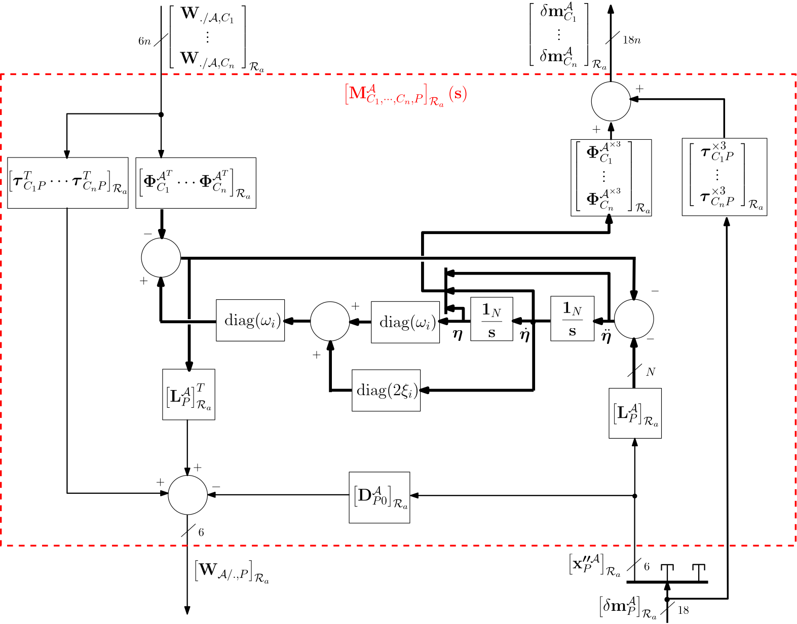
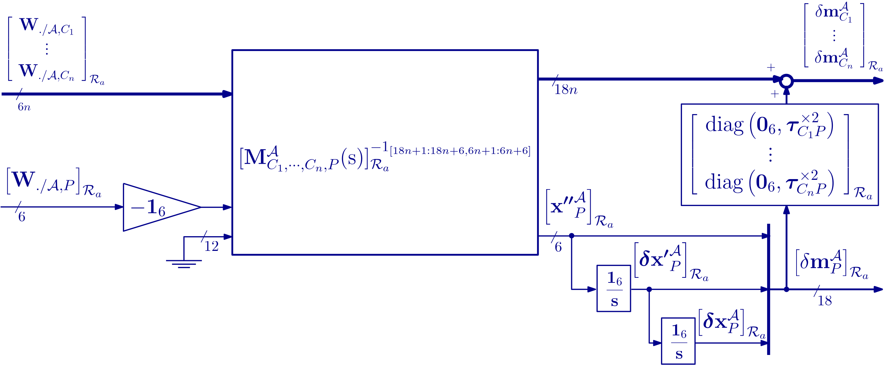
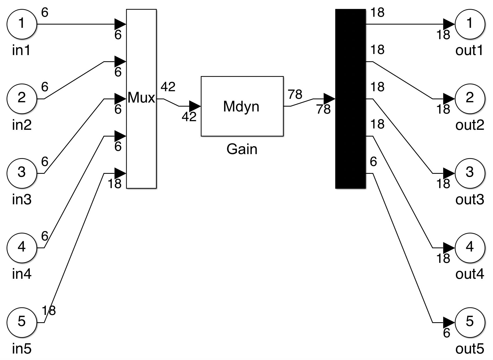

N ports Nastran body
NINOP model of a NASTRAN flexible body from .f06 and .bdf files
This block is a NASTRAN/MATLAB interface to compute the $(18n+6) \times (6n+18)$ linear dynamic model of a flexible body $\mathcal{A}$. The $n+1$ ports of this model are:
- the $n$ ports at points $C_i$ (for $i=1,\dots,n$), i.e.: the $n$ $18\times 6$ channels from the wrenches applied to the body at points $C_i$ by the child substructures to the motion vectors of points $C_i$,
- the port at point $P$, i.e.: the $6\times 18$ channel from the motion vector of point $P$ to the wrench applied by the body to the parent substructure at point $P$.
This interface reads the values from the NASTRAN/PATRAN analysis output files (files with extensions .f06 and .bdf) to build the model.
The obtained model is expressed in its reference frame $\mathcal{R}_a$.
The body $\mathcal{A}$ is modeled under the clamped at $P$ - free at $C_i\;(i=1,\cdots, n)$ boundary conditions.
A check-box "Free body at P" allows to free the model at the port $P$. Then the model is $18(n+1)\times 6(n+1)$ and includes $12$ integrators to model the $6$ rigid modes at the point $P$. The last $18\times 6$ channel corresponds to the channel from the wrench applied to the body at the point $P$ to the motion vector of the point $P$.
See also: General notations, multi-port flexible plate, multi-port FEM Kirchhoff plate, 1-port flexible body, TITOP model of a flexible beam, 1-port NASTRAN flexible body, Multi-Port_rigid_body
Contents
Description
Let us define:
- $\left[\mathbf{W}_{./\mathcal{A},C_i}\right]_{\mathcal{R}_a} $: the external wrench ($6\times 1$) applied to the body at point $C_i$, expressed in $\mathcal{R}_a$,
- $\left[\delta\mathbf{m}^{\mathcal A}_{C_i}\right]_{\mathcal{R}_a}$: the motion vector ($18\times 1$) of the body at point $C_i$, expressed in $\mathcal{R}_a$,
- $\left[\delta\mathbf{m}^{\mathcal A}_{P}\right]_{\mathcal{R}_a} $: the motion vector ($18\times 1$) of the body at point $P$, expressed in $\mathcal{R}_a$,
- $\left[\mathbf{W}_{\mathcal{A}/.,P}\right]_{\mathcal{R}_a}$: the wrench ($6\times 1$) applied by the body at point $P$, expressed in $\mathcal{R}_a$.
The NINOP model $\mathbf{M}^{\mathcal{A}}_{C_1,\dots,C_n,P}(\mathrm{s})$ of the flexible body is described by the following block diagram:
The details of this model are depicted in the following Figure:

It depends on :
- the frequencies $\omega_i$ and damping ratios $\xi_i$ ($i=1,\cdots,N$) of the $N$ flexible modes,
- the $N \times 6$ matrix of modal participation factor $\mathbf{L}^{\mathcal A}_P$,
- the $n$ $6\times N$ projection matrix $\boldsymbol{\Phi}^{\mathcal A}_{C_i}$ of the N modal shapes on the 6 d.o.f of point $C_i$,
- the $n$ kinematic model $\boldsymbol{\tau}_{C_iP}$ between points $C_i$ and $P$,
- the residual mass $\mathbf D^{\mathcal{A}}_{P0}$ of the body $\mathcal{A}$ rigidly cantilevered at point $P$.
If the check box "Free body at P" is selected, then: let us denote $[\mathbf M^{\mathcal A}_{C_1,\cdots,C_n,P}(\mathrm s)]_{\mathcal R_a}(18n+1:18n+6,6n+1:6n+6)$ the transfer from $\left[\boldsymbol{ \mathbf{x''}}^{\mathcal A}_{P} \right]_{\mathcal{R}_a}$ (the $6$ components acceleration dual vector at the point $P$) to $\left[ \mathbf{W}_{\mathcal{A}/.,P} \right]_{\mathcal{R}_a}$ (the $6$ components wrench). This chanel is then inverted and $12$ integrators are added according to following Figure to output the motion vector $\left[ \delta\mathbf{m}^{\mathcal A}_{P} \right]_{\mathcal{R}_a}$ of the body $\mathcal A$ at the point $P$.

$\mathbf G(\mathrm s)^{-1_{[I,J]}}$ denotes the system $\mathbf(\mathrm s)$ where the channel from the inputs numbered in $I$ to the outputs numbered in $J$ is inverted (the vector of indices $I$ and $J$ must have the same length).
Ports
Inputs:
- W./body,Ci $=\left[\mathbf{W}_{./\mathcal{A},C_i}\right]_{\mathcal{R}_a} $: 6 component signal (units: $N$ and $N.m$),
- m_P $=\left[\delta\mathbf{m}^{\mathcal A}_{P}\right]_{\mathcal{R}_a}$: 18 component signal (units: $m/s^2$, $rd/s^2$, $m/s$, $rd/s$, $m$, $rd$)
or, if "Free body at P" is selected, W./body,P $=\left[\mathbf{W}_{./\mathcal{A},P}\right]_{\mathcal{R}_a}$: 6 component signal (units: $N$ and $N.m$).
Outputs:
- m_Ci $=\left[\delta\mathbf{m}^{\mathcal A}_{C_i}\right]_{\mathcal{R}_a}$: 6 component signal (units: $m/s^2$, $rd/s^2$, $m/s$, $rd/s$, $m$, $rd$),
- Wbody/.,P $=\left[\mathbf{W}_{\mathcal{A}/.,P}\right]_{\mathcal{R}_a}$: 6 component signal (units: $N$ and $N.m$)
or, if "Free body at P" is selected, m_P $=\left[\delta\mathbf{m}^{\mathcal A}_{P}\right]_{\mathcal{R}_a}$: 18 component signal (units: $m/s^2$, $rd/s^2$, $m/s$, $rd/s$, $m$, $rd$).
Parameters
- Name of the .bdf file (without extension): string,
- Name of the .f06 file (without extension): string,
- Grid point corresponding to the point $P$ (connection with parent body): integer. This integer can be displayed in PATRAN by clicking on the node corresponding to the connection point $P$ and must be present in the .f06 file,
- Grid points corresponding to the points $C_i$ (connection with the child bodies): vector of integers. This integer can be displayed in PATRAN by clicking on the node corresponding to the connection point $C_i$ and must be present in the .f06 file,
- Number of modes to be considered: integer $N$. This integer must equal or lower than the number of flexible modes in the .f06 file,
- Common damping ratio: real, $\xi_i=\xi,\forall\;i=1,\cdots, N$,
- Percentage of uncertainty on the natural frequencies $\omega_i$ of the first $N_1$ flexible modes: real,
- Common percentage of uncertainty on each modal participation factor ($\mathbf{L}^{\mathcal A}_P$) of the first $N_2$ flexible modes: real.
- Common percentage of uncertainty on each coefficient of eigen-vectors matrix ($\boldsymbol{\Phi}^{\mathcal A}_{C_i}$) of the first $N_3$ flexible modes: real,
A check box "Free body at P".
Simulink diagram under the mask
The Simulink block is built by the initialization according to the parameters in the dialog box. Examples:
or, if "Free body at P" is selected: